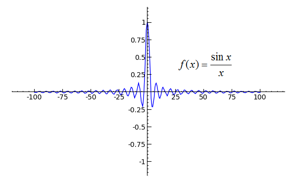
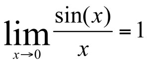
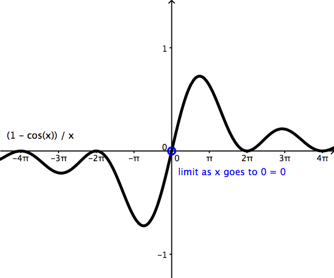
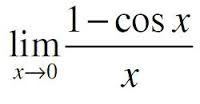

Home
Trig
Nonexistant
Algebraic Limits
Continuity
Limits with Trig
Sine


As x's value get closer to 0, the value of
sin(x)/x
gets closer to 1
Cosine


As x's value get closer to 0, the value of
1-cos(x)/x
gets closer to 0